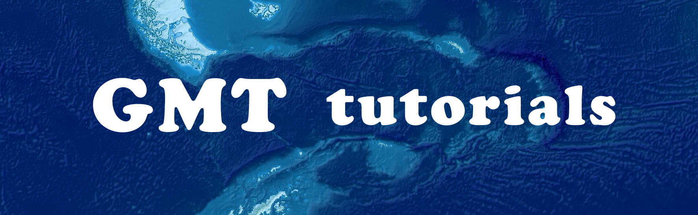

GMT Tutorials¶
{kind=link}
Generic Mapping Tools (GMT) is a set of open-source software for mapping and plotting geographic data. It features a command-line interface, which makes it completely different from the common GIS software like QGIS or ArcGIS. The PyGMT software, which is the latest derivative of GMT, even allows all Python users to use the collection of GMT tools more conveniently. For those who need to deal with a lot of plotting tasks or want to write a script for handling all these jobs, GMT is extremely worth learning. However, The command-line style of GMT syntax would be very challenging and makes the learning curve very steep, especially for beginners who are not familiar with manipulating geographic data and mapping.
In these tutorials, we will explore basic knowledge of GMT and useful plotting skills from numerous examples. The goal of each chapter is to produce a high-quality map from scratch and I will show you how to do that step by step. You will be learning many GMT commands and how to organize them in a command-line interface or Shell script (or Python script if using PyGMT). The tutorials will also explain things related to GMT when needed, such as the shapefile data format and the GDAL geospatial software, which would improve the efficiency of your mapping tasks.
In November 2019, GMT released its version 6. This version is a major rehaul from the previous GMT 4 and GMT 5, especially for the more concise and easier syntax. In each chapter of this tutorial, we will use the modern syntax introduced by GMT 6 while providing a link to scripts written in GMT 4-5 syntax for your reference. In addition, the PyGMT software was released its beta version last year (2020). Since it is under active development, this tutorial does not provide a detailed explanation of its syntax, but instead, you can find a Python script in Jupyter Notebook format at the end of each chapter showing how to make the target chapter figure using PyGMT.
The tutorials are designed and written from beginner level to more advanced tricks, but the content in each chapter is actually independent. You can read all the chapters in order if you are a GMT rookie, or you can jump to whichever section you are interested in to save your time if you have been using GMT for a while. Please feel free to leave any messages below any chapters or contact me at any time for any questions, comments, and ideas/tips to be shared. I hope you enjoy the fun of mapping from reading these tutorials!
License¶
This work is dual-licensed under the MIT and the Creative Commons Attribution 4.0 International licenses. Users can choose either or both licenses according to which part of the work they seek permission:
MIT License: For the code and all of the Jupyter Notebooks. Permission is hereby granted, including without limitation the rights to use, copy, modify, merge, publish, distribute, sublicense, and/or sell copies of the Software.
Creative Commons Attribution 4.0 International License: For the content. You may use, share, or adapt the document in any medium or format for any purpose, even commercially. You must give appropriate credit to the author, provide a link to the license, and indicate if changes were made.


Copyright © 2016-21 Whyjay Zheng. All rights reserved.
The source codes of all the text and pictures are accessible on Github, and are written in the format of reStructuredText. Feel free to fork me at any time!
Acknowledgments¶
I want to thank William Durkin, Patricia MacQueen, Minlong Lee, and Timothy Ting-Yu Lee for their insightful comments and conversations which have complemented the tutorials. I would also like to thank all the Github contributors, including Er Tan (tan2), KMO Li (likueimo), and Liang Wang (wangliang1989), for their constructive edits to the documentation. Here I give my deep thank-you to all the people who helped translate this work. The translation is a huge amount of work and thus could not have been done without your active support. If you would like to contribute to translating this tutorial, see the next section for more details.
Contribute to translation  ¶
¶
If you are interested in translating this website, please come to the open project on Weblate and start translating at any time. Thank you for contributing to this project!
Support this work¶
Found the content in this tutorial helpful? I’d be grateful if you could buy me a cup of bubble tea to fuel me up. If you are in a position to help the tutorial thrive, you are welcome to support it for cost in hosting service :D
Table of Contents¶
To skim through the chapter goals and maps, please go to Gallery (Chapter Index).
- Beginner’s GMT Course
- Basic Mapping Skills
- Plot and Edit Different Kinds of Maps (Basic)
- Plot and Edit Different Kinds of Maps (Advanced)
- Processing Gridded Data
- Processing Numerical Data